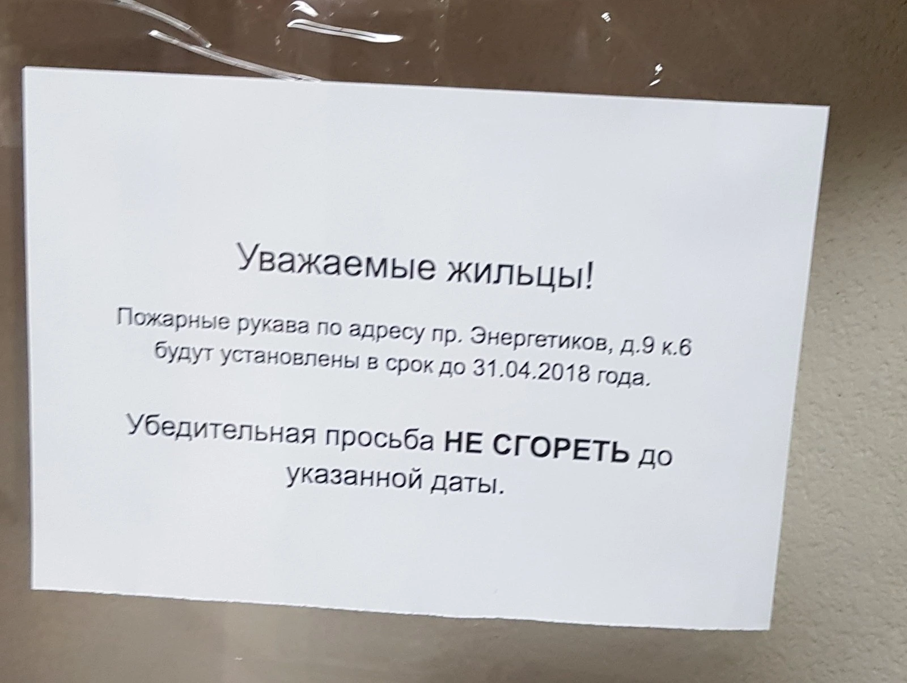
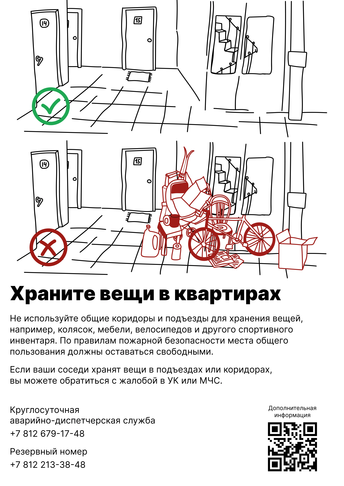
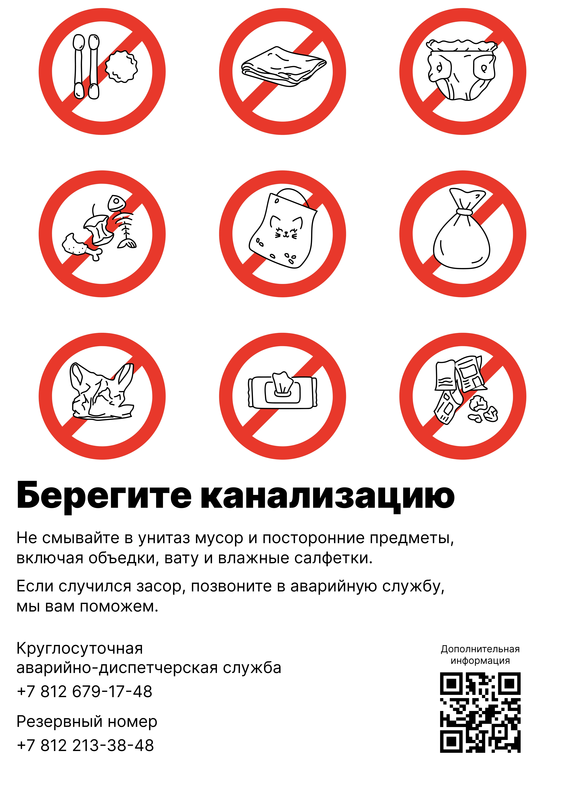
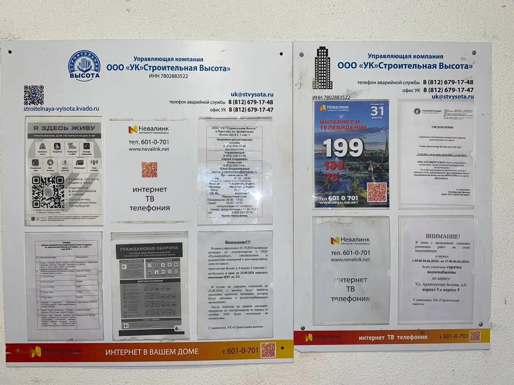
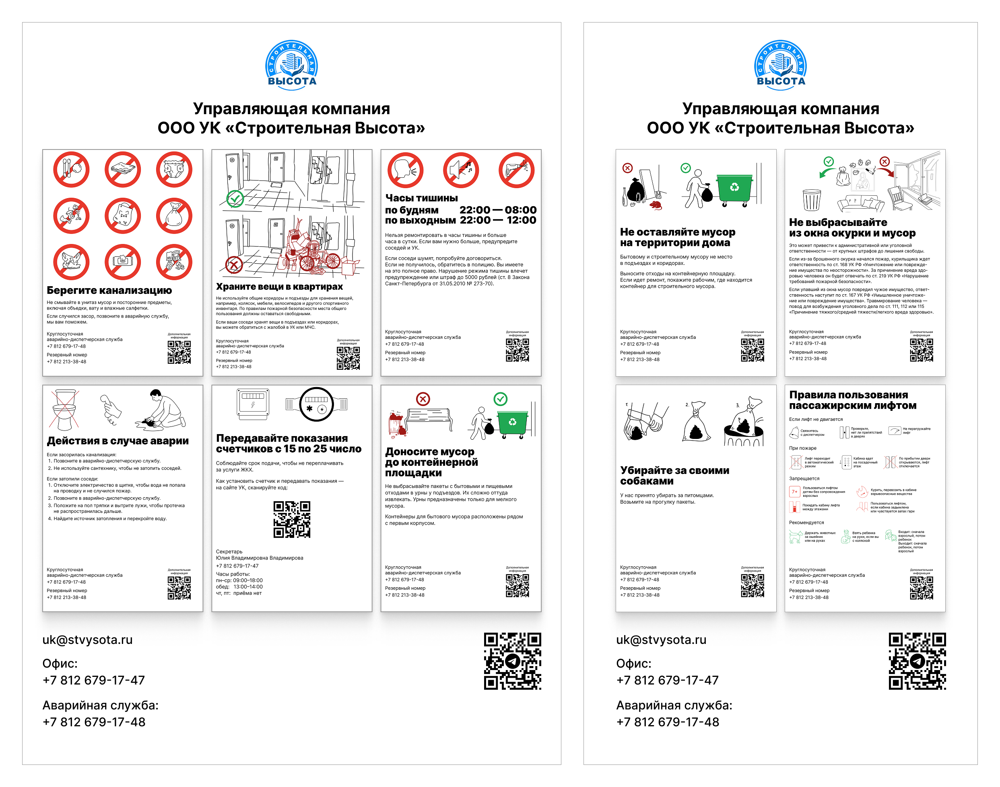
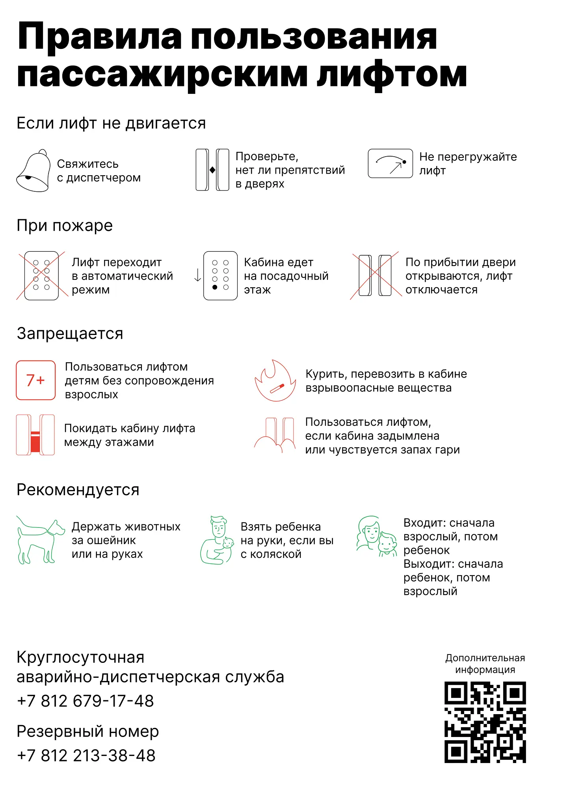
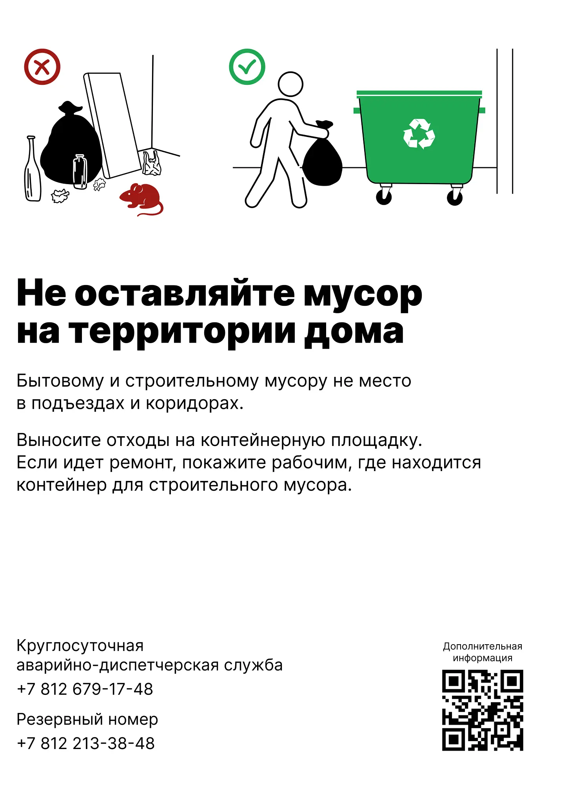
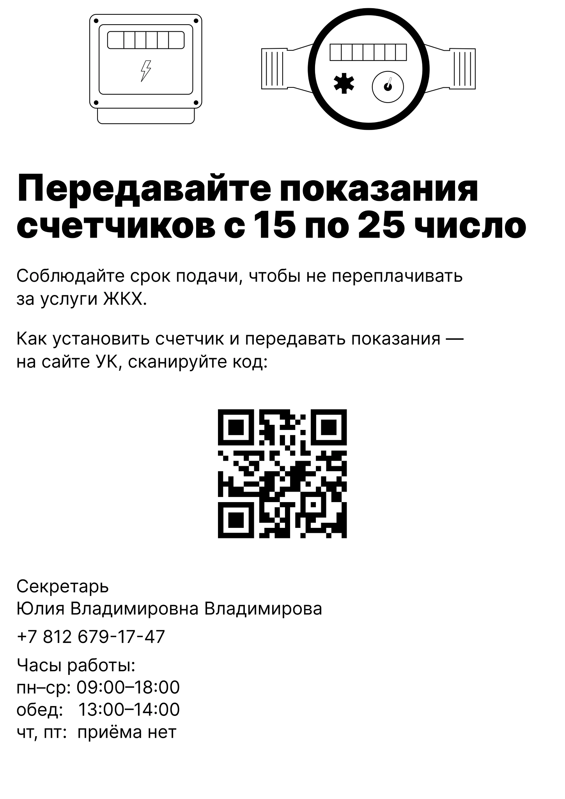
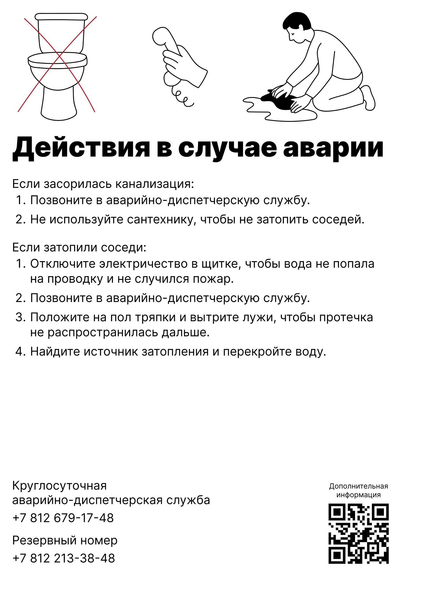

Дипломная работа в Бюро Горбунова
«Помощник ЖКХ» — универсальная система визуальных пособий для жильцов многоквартирных домов: плакаты и веб‑сайт, переводящие канцелярский ЖКХ‑язык на человеческий. ЖК «Парнас» с УК «Строительная высота» пилотный дом для запуска и проверки проекта, но решение масштабируемо для любых домов по России.
Жильцы не читают и не понимают официальные уведомления: мелкий шрифт, бюрократические формулировки,
отсутствие схем — результат проблем и звонков диспетчеру по одним и тем же вопросам.
Идея проекта — создать унифицированный комплект плакатов и онлайн‑справочника,
который работает для любого ЖК, с возможностью подставить контакты местной УК, график уборки,
расписание работы и другую полезную информацию.


Примеры типичных объявлений в ЖК. Скорее всего, в своем доме вы видели что-то подобное.
Проект делали вдвоём: я занимался дизайном и вёрсткой, Алина Михайловская (студентка школы редакторов Бюро) — написала классные тексты, перевела канцеляризмы в живой язык. Артдиректор Максим Ильяхов. Перебрали десятки ЖК Москвы, Питера и Екатеринбурга, вычленили типовые проблемы (свет, вода, мусор, прописка) и сделали модульную систему плакатов под разные сценарии.


Все плакаты сделали в единой структуре. Сначала иллюстрация, объясняющая смысл плаката. Ниже четкий и краткий заголовок. Затем понятный текст на человеческом языке. Внизу необходимые контакты и QR-код на сайт с полезными инструкциями. Все иллюстрации для сайта и плакатов я нарисовал сам.
Сайт «Помощник ЖКХ» собрал все инструкции в навигацию по темам, с возможностью менять контакты УК и добавлять локальные правила — готовый шаблон для масштабирования, можно применять в любом доме.
Почти все УК были готовы сотрудничать, если мы принесём им уже готовые плакаты. Строительная высота согласилась поработать с нами с нуля, поэтому она и стала пробным полигоном. Результат им понравился, плакаты повесили в подъезде. Алина в процессе даже успела получить обратную связь от пары жильцов, они положительно оценили новые плакаты. Теперь можно заниматься масштабированием и попробовать продавать идею, стоит сходить в ЖКшки ещё раз.


Сейчас плакаты висят на стандартном стенде, выглядит неидельно. В идеальном мире хотелось бы разместить плакаты формата А3 в логичных местах, например, про вещи — на этажах рядом с квартирами, про окурки — у общих балконов. Какие-то напоминалки, по типу дат сдачи показаний счётчиков — в лифте.
А со стендом можно сделать что-нибудь такое, чтобы всё выглядело в едином виде.









